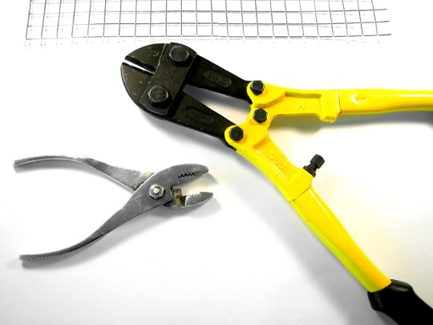

Et nyt organ for kritisk tænkning om internettet har set dagens lys: Bitbureauet kalder sig for “en internetpolitisk tænketank og en interesseorganisation for internettet.” Men hvad er internetpolitik? Fri kultur bringer et aktuelt perspektiv.

Foto: oskay.
Censur og trusselsbreve
To sammenhængende politiske tiltag i Danmark illustrerer hvad der er på spil, når man taler om internetpolitik. For nyligt afholdt Folketinget en høring om censur af internettet. Kort efter fremlagde kulturministeriet den såkaldte brevmodel til bekæmpelse af fildeling på internettet.
Brevmodellen går ud på at lade ophavsretsindustrien udspionere danske forbrugeres internettrafik og sende dem venligt formulerede trusselsbreve, hvis de mistænkes for at dele ophavsretsbeskyttet indhold.
Omkostningerne ved tiltaget, der beregnes til 10 millioner kroner over tre år, betales imidlertid af internetudbyderne og derigennem af forbrugerne selv.
Internetudbyderne pålægges derudover den lidet flatterende rolle som stikkerne der overgiver forbrugernes personlige informationer til ophavsretsindustrien, uden om grundlovens krav om retskendelse ved krænkelse af deres kommunikationshemmelighed.
Fri kultur har tidligere bragt indlæg om krisen ophavsretsindustrien befinder sig i, en krise der er forårsaget af internettets fremkomst. Denne krise er grunden til, at censur af internettet, gennem ophavsretsindustriens lobbyarbejde, i dag bliver betragtet som legitim kulturpolitik.
Censur af internettet og ophavsretslobbyens kamp mod forbrugerkopiering er to sider af den samme udvikling, hvor kommunikationsteknologisk innovation forsøges begrænset gennem en lovgivning der har til formål at beskytte specifikke erhvervsinteresser, snarere end mere vidtrækkende samfundsmæssige goder.
Internetforstyrrelser
Udviklingen af internettet er et skoleeksempel på, hvad teknologiforskere kalder forstyrrende teknologisk innovation. Begrebet indebærer, at en teknologisk udvikling fundamentalt forandrer betingelserne for, hvordan samfundet indrettes og derfor forstyrrer de etablerede samfundsinstitutioners måde at fungere på.
Ved sin fremkomst har internettet tilgængeliggjort en form for massekommunikation som tidligere, af økonomiske årsager, udelukkende var forbeholdt statslige aktører og store virksomheder.
Omkostninger forbundet med at organisere et stort antal mennesker på kort tid er i dag styrtdykket til næsten nul. Således er det nu muligt at planlægge en folkelig massedemonstration på under et døgn, sådan som det skete efter politiet ryddede Brorsons Kirke i 2009 og sådan som det finder sted overalt i Mellemøsten nu i begyndelsen af 2011.
Diktaturerne i Mellemøsten reagerer på de folkelige opstande ved bl.a. at begrænse og, i det egyptiske eksempel, helt afbryde adgangen til internettet. Ophavsretslobbyens arbejde for at få staten til at censurere bestemte hjemmesider er fuldstændig analog med de autokratiske regimers reaktion.
I dag kan enhver, uden betydelige økonomiske omkostninger, blive sin egen medieudbyder og nå ud til sin målgruppe ved hjælp af internettet. Denne udvikling forstyrrer således den etablerede medieøkologi, hvor mediernes fødekæder underlægges en stram styring, med ophavsretten som det primære kontrolsystem.
Hvor Mellemøstens og andre diktaturer forsøger at begrænse adgangen til nettet for at bevare deres politiske kontrol, forsøger ophavsretslobbyen at begrænse forbrugernes adgang til nettet for at bevare sin økonomiske kontrol over medielandskabet.
Reaktionær eller innovativ internetpolitik?
Internettet forandrer alle samfund der forbinder sig gennem det. Det tvinger etablerede politiske og økonomiske institutioner til at forholde sig til den teknologiske udvikling. Internetpolitik kan groft defineres som måden samfundets institutioner så forholder sig til udviklingen.
Ideelt set burde myndigheder og virksomheder forandre sig selv indefra og tilpasse sig den teknologiske udvikling, således at de bedst tjener borgere og forbrugere, dvs. beskytter deres rettigheder og friheder, samt tilbyder varer og tjenester af høj kvalitet til rimelige priser.
Desværre sker det nu, at de myndigheder og virksomheder, hvis interesser undermineres af udviklingen, kaprer den politiske proces og indfører begrænsninger af borgernes kommunikationsfrihed gennem censur, invaderer borgernes privatliv gennem logning af datatrafik, samt fører krig mod forbrugerne gennem perspektivløse tiltag som brevmodellen.
Brevmodellen, der står til at blive vedtaget af folketinget med et bredt flertal, er imidlertid et internetpolitisk stridspunkt, hvor selv regeringen ikke er enig med sig selv. Som Dagbladet Information kan berette:
For to uger siden gjorde videnskabsminister Charlotte Sahl-Madsen (V) det klart under en høring i Folketinget, at nettets »frie og åbne karakter« skal bevares, og »internetudbyderne skal ikke fungere som politi på nettet«.
Det valgte kulturminister Per Stig Møller (K) øjensynligt at overhøre, da han ugen efter traf beslutningen om at sende en tocifret regning til teleselskaberne for at forvalte brevsystemet de næste tre år.
Internetpolitik kan ligesom al anden politik være fremadrettet og innovativ, eller den kan være tilbageskuende og reaktionær. Den offentlige internetpolitiske debat i Danmark har alt for længe været domineret af en reaktionær politisk kadre, med AntiForbrugerGruppen som frontløbere og de folkevalgte som dens nyttige idioter.
Tiden er nu kommet til at tale om internetpolitik fra et innovativt perspektiv. Det er hvad Bitbureauet er sat i verden for at gøre.